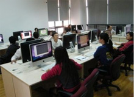
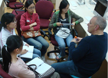

关于俱乐部


中山大学苹果俱乐部（SYSU APPLE CLUB）为广大同学，苹果爱好者，设计人员和开发人员创造一个与Apple零距离接触的平台。于2009年在东校区实验中心成立！俱乐部目标是：通过举办Apple的相关活动专业讲座等途径，给众多钟爱Apple的同学提供一个在IT行业体现自我价值挖掘自我潜力、提升自我综合素质，增长社会经验的平台。
主要工作：通过举办与Apple相关的活动，譬如：Apple产品体验活动，Apple电脑的使用培训，以及其他的一些可以丰富同学们学习和生活的活动，此外在条件成熟时还举办“居于Apple或iPhone上的软件创新大赛”。坚持和实现我们俱乐部的宗旨，为同学们创建一个良好的学习和发挥的平台。
俱乐部主要包括开发部门（设计部、终端部、后台部）和行政部门（运营部、秘书处）。开发部门负责苹果软件和程序的开发。成员将被组织或自发地学习苹果平台下的开发工具的使用；学习苹果平台下几种框架和几种语言的应用；在学习的同时他们将用这些知识去开发实实在在的软件和程序，并期待着它们能实际地投入应用，产生价值，成为真正意义上的产品。行政部门负责社团管理、组织开展活动、对内对外联系沟通以及宣传公关，基本工作职责是：为俱乐部服务。
会员可以通过选拔考试和面试加入项目工作组，工作组包含若干个项目组，将集中学习、讨论苹果技术，实践和开发具体的软件和应用项目。每一阶段将对工作组的成员进行考评，淘汰不合格的，增补优秀的。
俱乐部将始终保持苹果电脑一贯的技术与艺术完美结合的作风，并结合自己的特色，在实践中不断奋发前进、开拓创新，让每一位成员都能在这里获取有用的知识，实现自己的价值，绽放出自己最亮丽的光彩！